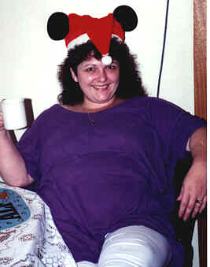
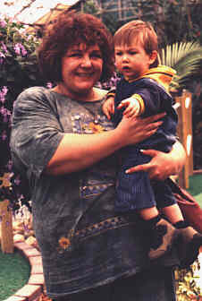
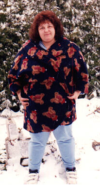
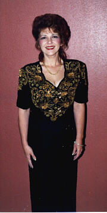

My Final Weight Loss Adventure.....
Success via Surgery
This is the story, in pictures and in words, of how I lost 180 lbs.
After a lifetime of being seriously overweight and the continuous struggle
to lose 200 lbs., I chose to have solve the problem via a specialized
surgical procedure known as a distal Roux-en-Y divided gastric bypass. This was
performed by Dr. Peter Bistolarides at the Bariatric Treatment Center in Addison, Michigan
in December of 1997. To him, I remain eternally grateful.....I have regained my
self respect, my health and my ability to play an active role in life.
 Life Before Surgery
Life Before Surgery

This is a charming picture of me taken at Christmas in 1996.

This was taken in July of 1997.

This picture was taken the day before surgery....December 16th, 1997. I weighed 344 lbs.
After the surgery....along the way
 This was taken in Australia in March of 1998....three months after surgery, I had already lost 60 lbs.
This was taken in Australia in March of 1998....three months after surgery, I had already lost 60 lbs.
Are you ready to see a whole new person?

This picture was taken in March, 1999. I weighed 164 lbs.